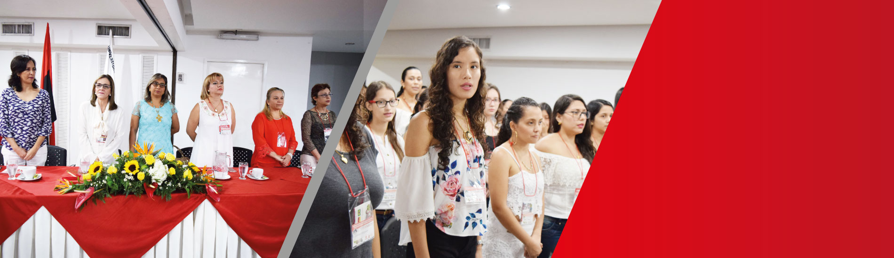
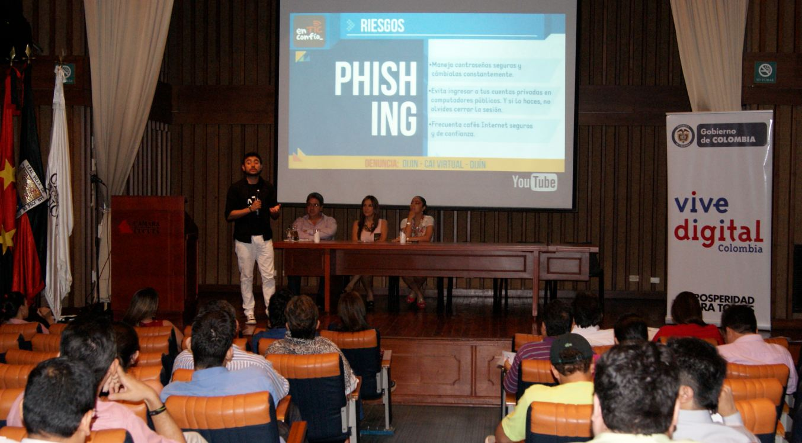

Universidad Francisco de Paula Santander

Semestre a semestre la Universidad Francisco de Paula Santander, reafirma el compromiso institucional con los procesos de mejoramiento continuo tanto en los aspectos misionales de nuestra casa de estudios, como también en todos sus procesos de apoyo académico.
Nuestra Alma Mater se propone nuevos retos a partir de los logros alcanzados, en muchos de ellos, como en todo proceso, los resultados se empiezan a percibir de forma gradual, siendo lo más importante la participación y compromiso de los diferentes miembros de la comunidad universitaria.
Hemos logrado gracias al alto sentido de pertenencia de nuestra comunidad universitaria, el logro de metas propuestas y la superación de retos, demostrando un alto compromiso institucional en el proceso de reconocernos como la universidad que somos, para ir en pos de la universidad que queremos ser.
Cámara de comercio de Cúcuta

La Cámara de Comercio de Cúcuta es una entidad autónoma, sin ánimo de lucro, integrada por las personas que ejercen el comercio (Industriales, Comerciantes, Agricultores, Ganaderos, etc.), cuyo objetivo primordial es ser depositaria de la confianza pública, correspondiéndole llevar el Registro Mercantil que es la más valiosa fuente de información para la vida de negocios en forma que resulte factor eficaz y positivo de organización de la actividad mercantil.
Con el ánimo de dar a conocer un de las nuevas ideas fuertes para el desarrollo de la región, se realizó el lanzamiento oficial del Clúster de las TIC, denominado iniciativa NORTIC.
Después de siete meses de trabajo, el clúster, que tiene como objetivo reforzar la competitividad de las empresas TIC (tecnología de la información y comunicación), logró diseñar una estrategia con el fin de hacer un cambio en el sector empresarial a través de una ruta que permita pasar de desarrollar software a la medida, al desarrollo del software como servicio.
Síguenos en redes sociales